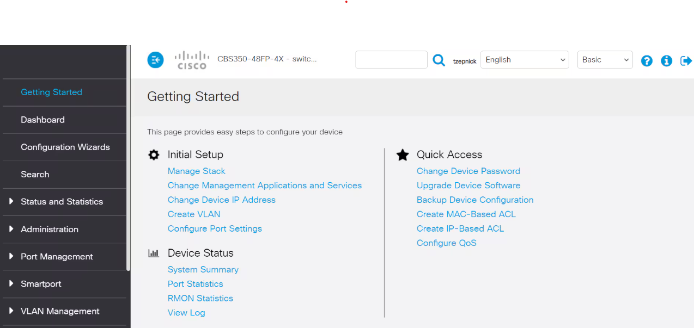

Mise en contexte :
Dans le cadre de mon alternance, j’ai eu la responsabilité de planifier et préparer la mise en service d’un réseau interne pour le Théâtre Nouvelle Génération. Ce réseau devait interconnecter l'ensemble des équipements audiovisuels, de son, d’éclairage et de supervision. L'objectif était de permettre un contrôle centralisé efficace pour les régisseurs son et lumière.
Phase de planification :
Mon travail a débuté par l’analyse d’un synoptique réseau préparé par les régisseurs, qui détaillait les liaisons à établir entre différents équipements. J'ai identifié les emplacements idéaux pour chaque switch Ethernet (3 de 24 ports, 7 de 16 ports, 6 de 8 ports), en tenant compte des contraintes techniques et d’accessibilité pour la maintenance. J’ai également établi un ordre d’intervention précis : configuration en atelier, test sur banc, puis installation physique.
Anticipation et organisation :
En amont, j’ai anticipé les besoins en matériel, identifié les paramètres critiques à préparer (VLAN, IP fixes, priorisation du trafic), et prévu des sessions de test avant l'installation finale. J’ai aussi planifié une formation utilisateur pour les régisseurs, ainsi qu’une documentation technique à leur remettre en fin de chantier.
Utilisation d'une interface professionnelle :
Pour configurer les switchs de manière sécurisée et intuitive, j’ai utilisé l’interface web développée par Cisco. Elle permettait d’assigner les VLAN, d’attribuer les IP fixes, et de gérer les priorités de flux réseau avec clarté. L’interface était idéale pour garantir une configuration conforme aux exigences techniques des régisseurs.
Conclusion :
Cette mission m’a permis de mettre en pratique une planification rigoureuse, en lien direct avec les attentes du client et les exigences techniques du chantier. J’ai su anticiper les étapes clés, organiser le déploiement du réseau de façon logique et sécurisée, et préparer les utilisateurs finaux à sa prise en main.
Banc de test des switchs avant installation.
Interface Cisco utilisée pour la configuration réseau.
Devanture du Théâtre Nouvelle Génération de Vaise.
Installation physique des switchs dans les baies techniques du théâtre.
Mise en contexte :
La procédure d’installation a été réalisée dans le cadre du projet réseau mené au Théâtre Nouvelle Génération de Vaise. Ce théâtre accueillant du public et des spectacles variés nécessitait une infrastructure informatique robuste et bien documentée pour la supervision du son, des lumières et de la vidéo.
Réalisation de la procédure :
Une fois la planification terminée, j’ai mis en application la procédure d’installation et de mise en service. Chaque switch était configuré en atelier avec les bons paramètres : VLAN séparés pour chaque flux (audio, vidéo, internet, intercom, supervision), IP statiques, priorisation du trafic (QoS), et désactivation de l’option EEE pour garantir les performances audio.
Installation et test :
Après les tests fonctionnels en interne, j’ai procédé à l’installation physique des switchs dans les baies techniques, en vérifiant chaque connexion Ethernet, leur alimentation et leur accessibilité future. J’ai ensuite validé leur fonctionnement sur site avec des tests réels : communication avec les consoles, les haut-parleurs, et les interfaces de supervision.
Transmission au client :
J’ai rédigé un rapport d’installation précis avec la procédure de reprogrammation et formé les régisseurs à l’utilisation du système. Cela leur permet aujourd’hui d’être autonomes pour surveiller et maintenir leur réseau interne.
Conclusion :
Cette mission m’a permis de mettre en pratique une procédure technique rigoureuse, documentée et compréhensible pour des utilisateurs finaux. J’ai aussi appris à présenter oralement la procédure et à structurer les étapes essentielles de mise en service.